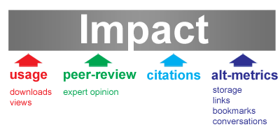
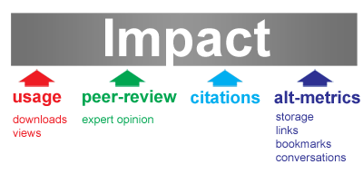
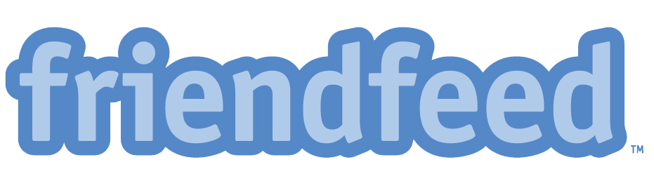
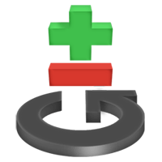
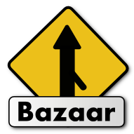
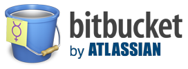
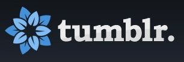

The Decoupled Journal?
|  |  |
Our group and what we do.
We didn't know about it when we got here...
A grab bag of tools that will help you do better research, and potentially open up your work.
Believes openness is the way to keep up in a rapidly changing world
Thinks academic knowledge should be more accessible.
Wants to make research more reproducible and available.
Journal subscriptions keep the world and ourselves from our papers.
Most research is typically done in secret, so you don't get scooped.
Double blind closed review process.
Archaic paper based publishing where the publishers cash in and own the copyrights.
Open access journals and tools to rapidly share the latest discovery.
Share your work as you do it with science blogs, open notebooks, and open sourcing your tools.
Post publication, open peer review.
Web based rapid publishing where the author is in control and owns the copyright.
|  | |
|  |
|  |  |
|  | ||
|  |
/
#